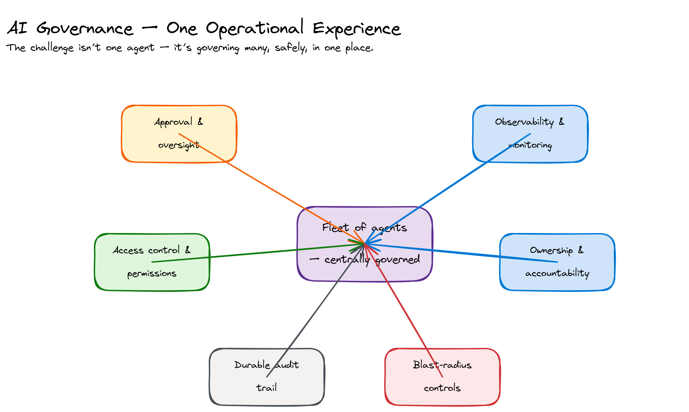
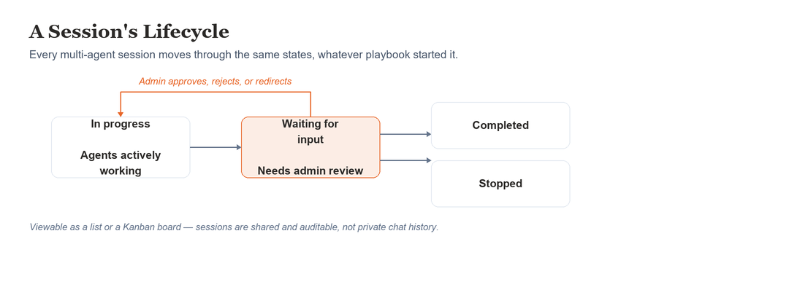

Extending Agents Into a Coordinated, Multi-Agent System
The framework so far governed many agents within Intune. Real security work spans the whole estate, not one product — and needed agents that could coordinate across that boundary, not just across tasks.
- Role
- Foundational design contributor
- Scope
- Multi-agent coordination across the estate, not just Intune
- Outcome
- Entered limited public preview, August 2026
“Introducing Project Perception: The Next Evolution of Agentic Security” — Microsoft Security, Microsoft’s official YouTube channel.
Every agent in the framework so far had been governed within Intune — one product, one approval loop, however many agents. But real security work doesn’t stay inside one product’s boundary: an investigation might start in Defender, pull device context from Intune, and end with a policy change somewhere else in the estate entirely. Nothing in the existing framework coordinated agents across that boundary, shared context between them, or gave the people responsible for security a single place to direct and approve work spanning more than one product at a time.
The audience shifted too. The earlier agents were built for the Intune admin, managing devices and policy. This system is built for security teams instead — the Security Reader and Security Admin roles working in Defender, running threat investigation and remediation, not device management.
I contributed early, foundational design work on the interaction model, before this work had the shape it does today. The first clear finding: coordination couldn’t just mean more chat. When several specialized agents contribute to one outcome, security teams needed a shared, durable session to work from — the same “revisitable artifact, not ephemeral chat” principle from the Intune agent work — not several separate, untraceable conversations.
The second finding was about entry points. Security teams didn’t want to learn which of several specialized agents to open for a given task — they wanted to describe the goal and let the system route to the right one. Natural-language chat became the front door, with the system identifying the right workflow instead of security teams hunting for the right tool.

Screenshot from Microsoft’s public preview announcement — microsoft.com/security/project-perception-agentic-system.
How far the system could act on its own, without a human re-approving every step along the way, was the harder question. It doesn’t scale to have a security team member sign off on individual actions when the system is meant to operate continuously across an entire security estate — but the fix wasn’t more automation with less oversight. It was moving where that oversight lives.
Approve every action individually
The same approval-per-step model that worked for a single agent, single session doesn’t scale to a system meant to run continuously, across multiple agents, all day. Treated as a queue of individual approvals, it would turn a defense system meant to operate around the clock back into exactly the bottleneck it was meant to remove.
Approve the strategy, not each step
Security teams set and approve the mission — what the system should be watching for, what it’s allowed to act on. Review friction then scales with risk: a clean, in-bounds action gets a lightweight single-click confirmation instead of a full review; anything flagged or outside the approved bounds still gets escalated for explicit review. Every tier gets a human in the loop — what changes is how much friction that loop has. Microsoft’s own framing for it: “Strategy stays human. Scale becomes autonomous.”
Design exploration · risk-tiered approval
Safety & Guardrail Flow
Risk-tiered response — review friction scales to severity, not a flat on/off for autonomy.
Low risk
Single-click approve
Elevated
Full review + reasoning
High-risk
Escalated · blocked until resolved
Interactive · click to expand
Incoming action
Script, policy change, or remediation request enters the pipeline.
Risk analysis
Agent evaluates harm potential, anomalies, and contextual signals.
Low risk
No risk detected
Signal is clean. Action is within expected parameters.
Review depth
Single-click approve
Admin sees a summary card — one button to approve.
Audit logged
Decision recorded with actor, timestamp, and context.
Action deployed
Proceeds immediately on approval.
Elevated
Risk detected
Anomaly or policy concern flagged. Human judgment required.
Review depth
Reasoning surface
Agent explains why this was flagged and what it found.
Full review form
Admin reads context, adds notes, approves or rejects.
Audit logged
Full reasoning chain and decision recorded.
Pending admin decision
Proceeds or is blocked based on the outcome.
High-risk
High-risk or destructive
Potentially catastrophic. Blocked immediately, escalated for review.
Review depth
Auto-block
Action is halted before any effect takes place.
Escalated review
Routed to a senior admin with full context and diff.
Threshold check
Configurable rules can pre-authorize known-safe destructive ops.
Audit logged
Block reason, escalation chain, and final decision recorded.
Blocked until resolved
Only proceeds on explicit escalation approval.
A design exploration of mine, not a confirmed Perception mechanism — shown to illustrate the “strategy stays human” tradeoff above in more depth.
Hosted directly in the Microsoft Defender portal: specialized agent teams — Red probing like an attacker, Blue investigating like a responder, Green remediating and hardening — working as a closed loop, coordinated through a shared, auditable session rather than isolated chats.


Public preview, per Microsoft’s own announcement — microsoft.com/security/project-perception-agentic-system, with session-lifecycle details from learn.microsoft.com/security/agentic-security. Shown as reference for the direction this foundational work fed into; my own contribution was early design work, not the full shipped product.
Approval checkpoints throughout the workflow, not just at the end, cost real friction — every checkpoint is a chance for a security team to pause a plan already in motion. I designed for it anyway: with several agents acting in sequence, the ability to intervene at any point mattered more than a faster end-to-end run. Approving once at the start and letting the whole chain execute would have been simpler to build, but it asked for more trust than a brand-new multi-agent system had earned yet.
This early work didn’t stay contained to Intune. The scale and monitoring gaps it surfaced were real problems for the broader security-agent pattern library, not just Intune’s slice of it — solving them locally and pushing the fix back upstream strengthened the shared foundation other product agents build on, VRA included. It’s the same cross-product bridging approach I used with the design-system team on the Intune agent work: solve the local problem, then generalize it for the group.
A shared, durable session is worth the redesign cost the moment more than one agent touches an outcome — private, per-agent chat histories don’t hold up once agents start handing off work to each other.
Approval doesn’t have to mean stopping at every step — the harder, more valuable design problem is deciding which layer of the system the approval belongs at.
Patterns built for one product’s constraints often reveal gaps the wider system hasn’t hit yet — solve locally, then generalize, rather than waiting for someone else to find the same gap.